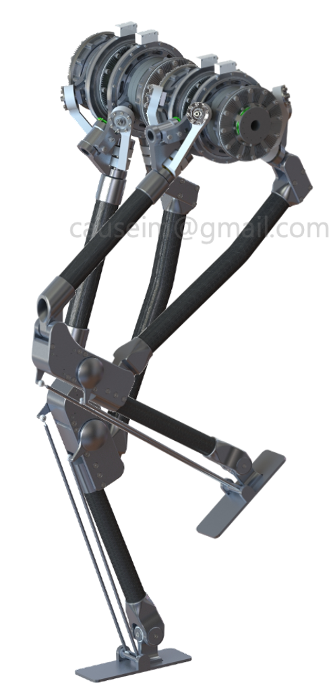
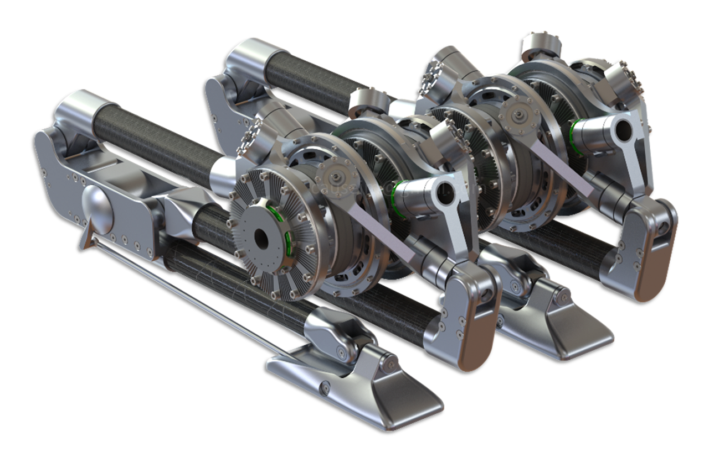
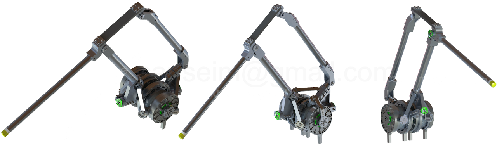
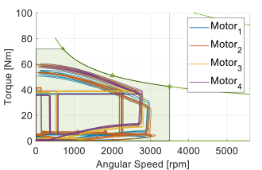
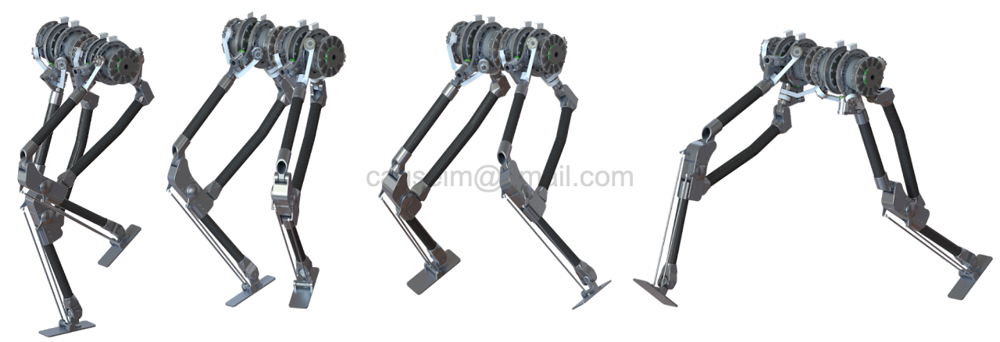
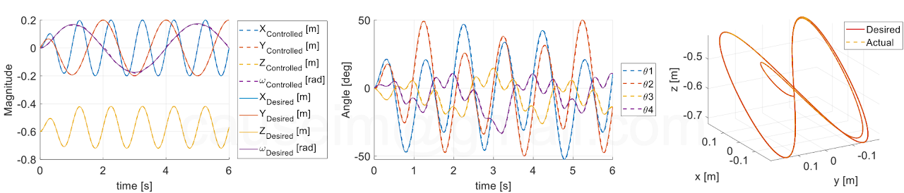

Phase 1 complete · Manuscript ready · Bipedal prototype under construction
Spatial Five-bar Mechanism (SFM)
A 4-DOF parallel mechanism built from two Coaxial and Symmetric 5R
Spherical Parallel Mechanism (CoSy 5R-SPM) sets that share a common rotation axis.
The radial-sum topology yields closed-form kinematics, broadly uniform load sharing across
four actuators, a workspace reaching ≈92% of its enclosing sphere, and unbounded coaxial
rotation — designed for life-sized bipedal legs and high-payload arms.
4-DOF Parallel MechanismCoaxial 5R-SPMBipedal LegIndustrial Arm

Bipedal lower-body prototype based on two SFMs — all eight active joints sit at the pelvis in coaxial arrangement.
Headline Specs
Degrees of Freedom
4
Active Joints
4
Workspace / Enclosing Sphere
~92%
Coaxial Rotation
Unbounded
Per-Gear Load (vertical, LDI≈1)
~1/4
Gear-Life Upper Bound
≤ 64×
Overview
Bipedal robots are leaving the lab and moving into long-duty-cycle deployments — warehouses,
factories, service environments. Under those conditions reducer fatigue life
becomes as central to commercial viability as raw performance: harmonic and cycloid gears
scale with load to the third (and tenth-third) power, so even modest reductions in peak
torque buy outsized service-life gains. The SFM takes this leverage as
its design driver.
The mechanism is built from two Coaxial and Symmetric 5R-SPM (CoSy 5R-SPM)
sets sharing a common rotation axis. Defining the end-effector position as the
radial vector sum of the two outputs lets the full 4-DOF forward / inverse
kinematics and the Jacobian be written in closed form as the sum of two independent 2-DOF
analyses — a notable simplification for a 4-DOF parallel mechanism. The same closure
carries the unbounded-rotation property of single coaxial 5R-SPMs into four degrees of
freedom.
Three design goals (G1–G3).G1 balanced vertical load sharing across the four actuators (quantified
by the newly proposed Load Distribution Index, LDI);
G2 a wide range of motion while keeping in-principle unbounded coaxial
rotation;
G3 low end-effector impedance — all motors and reducers sit at the base,
so reflected rotor inertia does not cascade down the link chain.

Pelvis actuator cluster — four coaxial drives feeding carbon-fiber parallel links of two paired CoSy 5R-SPM sets.

SFM leg module — three viewing angles of the same assembly.
Design Principles
Radial-sum topology (paired CoSy 5R-SPM) — the end-effector position is the radial sum of the two CoSy 5R-SPM outputs; this closure lets each set be analyzed independently and reduces 4-DOF kinematics to two paired 2-DOF problems.
Coaxial input axes — all four input axes share one rotation axis, so the SFM inherits the unbounded-coaxial-rotation property of single coaxial 5R-SPMs and extends it to 4 DOFs.
All rotors at the base — placing every motor and reducer at the base eliminates the cascaded reflected rotor inertia that plagues serial chains; what reaches the end-effector is the link inertia alone.
Three local performance indices — the Local Conditioning Index (LCI), Torque Amplification Ratio (TAR), and the newly introduced Load Distribution Index (LDI) — make G1–G3 quantitative pose by pose, with explicit ties to the Global Conditioning Index and Yoshikawa's manipulability.
Closed-form Jacobian and singularity analysis — because each CoSy 5R-SPM has analytic kinematics, the SFM Jacobian and its singularity loci follow in closed form; control stays cheap despite the parallel topology.
Gear-life Scaling
Harmonic and cycloid gears — the two reducer families most common in bipedal robots — have
expected lives that scale inversely with the third (and tenth-third) power of the applied
torque. In poses where the SFM's LDI approaches unity, each of the four reducers carries
roughly a quarter of the end-effector load, which under the cubic torque–life relation
translates to an upper bound of (¼)−3 = 64× in
service life. This is an ideal upper bound attained only where the LDI reaches
unity; the effective factor in practice is smaller, but still substantial enough to make
the SFM a strong candidate for long-duty-cycle robots where maintenance windows are scarce.
Performance Envelope
Force capacity mapped across the leg's vertical workspace, split by limiting regime. The
motor-limited map bounds instantaneous capability at high joint speeds; the
gear-limited map bounds the sustainable, repeatable peak used for sizing.
Reachable workspace of a single leg — hemispherical volume around the pelvis.

Operating-point sweep across the four motors — torque vs. angular speed.
Motion & Control
Parallel pose sequences and closed-loop tracking from the simulator/rig. Because limb mass
is centralized at the pelvis, the dynamic model stays well-conditioned even at
high swing rates — tracking RMS stays tight across the six-second test window.
Leg stride — five poses across one cycle of the gait primitive.

Full biped — four representative stance/swing configurations.

Closed-loop tracking — Cartesian pose (left), joint angles θ₁–θ₄ (center), and 3D end-effector trace of desired vs. actual (right).
Demo Clips
8
Short demo videos hosted on YouTube. Click any tile to watch in a new tab.
The paper compares the SFM against a matched 4-DOF serial manipulator and walks through
two concrete scenarios where its properties translate into practical advantage.
1. Industrial Robotic Arm
With the coaxial joint vertical, gravitational load is shared evenly across the
four reducers throughout the workspace, so they age at comparable rates and synchronized
replacement cycles become feasible. With the coaxial joint aligned to the
frontal axis, the four actuator outputs sum directly along the vertical
direction and each reducer carries ~1/4 of the end-effector load — buying the upper-bound
≤64× reducer-life extension where the LDI reaches unity. Either configuration suits
long-duty-cycle robots where maintenance windows are scarce.
High payloadTall workspaceSynchronized maintenance
2. Bipedal Robot Leg
A bipedal leg must produce vertical ground-reaction forces and velocities well above
body weight, demands a broad workspace for obstacle climbing and acrobatic motions, and
needs a dedicated yaw DOF — each maps onto an SFM property documented in the paper.
A pair of SFMs implementing both legs places all eight active joints at the
base in a coaxial arrangement; under dynamic motion, the gyroscopic torque of
the high-speed rotors becomes both easier to estimate and partially self-canceling
within limits. A bipedal lower-body prototype based on this configuration is currently
under construction.
All rotors at baseDedicated yaw DOFPrototype building
Earlier Projects
The SFM didn't appear out of nowhere — it stands on a decade of work on knee-assist
exoskeletons, modular high-torque actuators, and parallel-mechanism manipulators. Two
earlier project lines that directly fed into it:
A family of high-torque-density actuator modules with forced-air cooling and
coaxial output stages, designed for multi-DoF robots. The lineage:
CoSMo (single-actuator module, MDPI 2018), E-CoSMo
(4-DoF robotic link, IROS 2019), and the 7-DoF CoSMo-Arm manipulator
(IROS 2020). The thermal management and load-distribution principles validated here
flow directly into the current SFM.
Modular actuatorForced air cooling7-DoF manipulatorHigh torque density
A wearable knee-assist exoskeleton for industrial field workers, built on a
conditionally singular 4-bar mechanism: the singular configuration is exploited
(rather than avoided) to mechanically lock the joint when the wearer needs static
support, then released for swing. Key contributions span hybrid locking design, control
algorithm for assist/free transitions, and field validation. Earlier, IECON-2016
version explored the singular-configuration concept; the MDPI-2020 version pushed it
through to industrial deployment.